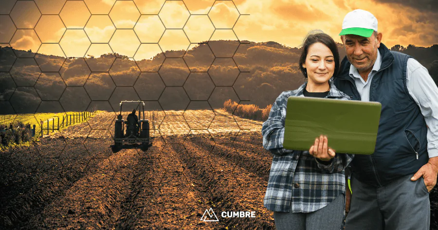

A tecnologia no campo consiste no uso, em atividades no meio rural, de softwares, aplicativos e hardwares com fins produtivos. Um bom exemplo desse tipo de inovação é a utilização de drones para pulverização de fertilizantes, pesticidas e outros produtos em áreas de cultivo.
